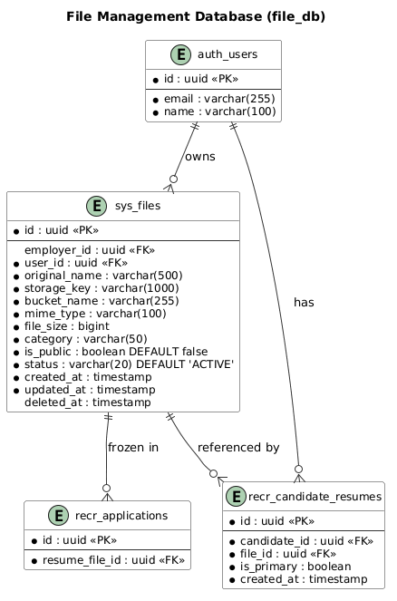

Database Design Document
File Management Module
FILE
1. Overview
1.1 Purpose
This document defines the database design for the File Management module (database: file_db).
1.2 Requirements Addressed
| SRS Requirement | Database Solution |
|---|
| FR-001 Upload File | sys_files table (metadata storage) |
| FR-002 Download File | sys_files table (storage_key lookup) |
| FR-003 List Files | sys_files table (query with indexes) |
| FR-004 Delete File | sys_files table (soft delete via status/deleted_at) |
1.3 ERD Diagram

Figure 1: File Management ERD
2. Schema Design
2.1 Database Strategy
| Aspect | Decision |
|---|
| Database | file_db |
| Table naming | sys_<table_name> |
| Primary keys | UUID (via gen_random_uuid()) |
| Timestamps | created_at, updated_at with NOW() default |
| Soft delete | deleted_at column (NULL = active) |
| Storage backend | Amazon S3 (presigned URLs) |
2.2 Table: sys_files
| Column | Type | Nullable | Default | Description |
|---|
| id | uuid | NO | gen_random_uuid() | Primary key |
| employer_id | uuid | YES | NULL | FK to sys_employers(id), SET NULL on delete |
| user_id | uuid | NO | - | FK to auth_users(id), CASCADE on delete |
| original_name | varchar(500) | NO | - | Original filename as uploaded by user |
| storage_key | varchar(1000) | NO | - | S3 object key (unique path) |
| bucket_name | varchar(255) | NO | - | S3 bucket name |
| mime_type | varchar(100) | NO | - | MIME type (e.g., application/pdf) |
| file_size | bigint | NO | - | File size in bytes |
| category | varchar(50) | NO | 'OTHER' | File category classification |
| is_public | boolean | NO | FALSE | Whether file is publicly accessible |
| status | varchar(20) | NO | 'ACTIVE' | File status lifecycle |
| created_at | timestamp | NO | NOW() | Creation time |
| updated_at | timestamp | NO | NOW() | Last update time |
| deleted_at | timestamp | YES | NULL | Soft delete timestamp (NULL = active) |
CREATE TABLE sys_files (
id UUID PRIMARY KEY DEFAULT gen_random_uuid(),
employer_id UUID REFERENCES sys_employers(id) ON DELETE SET NULL,
user_id UUID NOT NULL REFERENCES auth_users(id) ON DELETE CASCADE,
original_name VARCHAR(500) NOT NULL,
storage_key VARCHAR(1000) NOT NULL,
bucket_name VARCHAR(255) NOT NULL,
mime_type VARCHAR(100) NOT NULL,
file_size BIGINT NOT NULL,
category VARCHAR(50) NOT NULL DEFAULT 'OTHER',
is_public BOOLEAN NOT NULL DEFAULT FALSE,
status VARCHAR(20) NOT NULL DEFAULT 'ACTIVE',
created_at TIMESTAMP NOT NULL DEFAULT NOW(),
updated_at TIMESTAMP NOT NULL DEFAULT NOW(),
deleted_at TIMESTAMP,
CONSTRAINT sys_files_category_check CHECK (category IN ('RESUME', 'AVATAR', 'COMPANY_DOC', 'JOB_ATTACHMENT', 'OTHER')),
CONSTRAINT sys_files_status_check CHECK (status IN ('TEMP', 'ACTIVE', 'DELETED'))
);
2.3 Storage Key Strategy
Files are organized in S3 using a hierarchical key structure that supports multi-tenancy and access control:
| Context | Pattern | Example |
|---|
| Organization-scoped | {employer_id}/{user_id}/{category}/{uuid_filename} | acme-corp/user-123/RESUME/a1b2c3d4-resume.pdf |
| Individual user | {user_id}/{category}/{uuid_filename} | user-456/AVATAR/e5f6g7h8-photo.jpg |
Key Components:
- UUID prefix: Generated filename to prevent collisions (e.g.,
a1b2c3d4-resume.pdf)
- Category folder: Groups files by purpose (RESUME, AVATAR, etc.)
- User/Employer folder: Isolates files per tenant for access control
2.4 Category Enum Values
| Category | Description | Typical MIME Types | Max Size |
|---|
RESUME | User resume/CV files | application/pdf, application/msword | 10 MB |
AVATAR | User profile photos | image/jpeg, image/png, image/webp | 5 MB |
COMPANY_DOC | Company documents (logo, certificates) | image/*, application/pdf | 10 MB |
JOB_ATTACHMENT | Job posting attachments | application/pdf, application/msword, image/* | 10 MB |
OTHER | General/miscellaneous files | * | 10 MB |
2.5 Status Lifecycle
| Status | Description | Transition |
|---|
TEMP | Presigned URL generated, upload in progress | TEMP → ACTIVE (on confirm), TEMP → DELETED (on timeout/cleanup) |
ACTIVE | Upload confirmed, file available for use | ACTIVE → DELETED (on user/system delete) |
DELETED | Soft-deleted, awaiting S3 cleanup | DELETED → (terminal state, physical cleanup by worker) |
3. Indexes
-- sys_files
CREATE INDEX sys_files_user_id_idx ON sys_files(user_id);
CREATE INDEX sys_files_employer_id_idx ON sys_files(employer_id);
CREATE INDEX sys_files_category_idx ON sys_files(category);
CREATE INDEX sys_files_status_idx ON sys_files(status);
CREATE INDEX sys_files_created_at_idx ON sys_files(created_at);
-- Composite index for common query pattern (list active files by user and category)
CREATE INDEX sys_files_user_category_status_idx ON sys_files(user_id, category, status);
-- Composite index for employer-scoped queries
CREATE INDEX sys_files_employer_category_status_idx ON sys_files(employer_id, category, status);
-- Unique constraint on storage_key to prevent duplicates
CREATE UNIQUE INDEX sys_files_storage_key_unique ON sys_files(storage_key);
Index Usage Patterns
| Query Pattern | Index Used | Est. Rows |
|---|
| List user's resumes | sys_files_user_category_status_idx | 5-20 |
| List employer documents | sys_files_employer_category_status_idx | 10-50 |
| Find file by ID | Primary key (id) | 1 |
| Cleanup old TEMP files | sys_files_status_idx + sys_files_created_at_idx | 0-100 |
| List recent uploads | sys_files_created_at_idx | varies |
4. Migrations
4.1 Migration Strategy
| Aspect | Decision |
|---|
| Tool | Drizzle ORM (drizzle-kit) |
| Database | file_db |
| Rollback | Required for every migration |
4.2 Migration Order
| Order | Migration | Description |
|---|
| 1 | 001_create_sys_files | Create sys_files table with constraints |
| 2 | 002_create_indexes | Create all indexes |
5. Data Dictionary
| Table | Description | Resolves | Est. Rows (Y1) |
|---|
| sys_files | File metadata and storage references | FR-001, FR-002, FR-003, FR-004 | 100,000 |
Row Growth Estimates
| File Category | Avg Size (bytes) | Est. Records/Y1 | Storage (GB) |
|---|
| RESUME | 500 KB | 20,000 | 10 |
| AVATAR | 200 KB | 15,000 | 3 |
| COMPANY_DOC | 1 MB | 5,000 | 5 |
| JOB_ATTACHMENT | 800 KB | 10,000 | 8 |
| OTHER | 500 KB | 5,000 | 2.5 |
| Total | - | 55,000 | 28.5 |